Ujaval Gandhi
Ujaval GandhiUzorkovanje rasterskih podataka korišćenjem tačaka ili poligona (QGIS3)¶
Mnogi naučni i ekološki skupovi podataka dolaze kao rasteri sa mrežom. Podaci o elevaciji (DEM) se takođe distribuiraju kao rasterske datoteke. U ovim rasterskim datotekama, parametar koji se predstavlja je kodiran kao vrednosti piksela rastera. Često je potrebno izdvojiti vrednosti piksela na određenim lokacijama ili ih agregirati preko nekog područja. Ova funkcionalnost je dostupna u QGIS-u putem algoritama za obradu. „Uzorak vrednosti rastera“ za tačkaste slojeve i „Zonalna statistika“ za poligonske slojeve.
Pregled zadatka¶
S obzirom na rastersku mrežu dnevnih maksimalnih temperatura u kontinentalnom delu SAD, potrebno je da izdvojimo temperaturu na tačkastom sloju svih urbanih područja i izračunamo prosečnu temperaturu za poligonski sloj svakog okruga u SAD.
Druge veštine koje ćete naučiti¶
Izaberite i uklonite više slojeva iz QGIS sadržaja.
Dobijte podatke¶
NOAA-in „Centar za klimatske predviđanja <http://www.cpc.ncep.noaa.gov/>“ pruža „GIS podatke <http://www.cpc.ncep.noaa.gov/products/GIS/GIS_DATA/>“ vezane za temperaturu i padavine u SAD. Preuzmite „najnoviju datoteku mreže za maksimalne temperature <ftp://ftp.cpc.ncep.noaa.gov/GIS/GRADS_GIS/GeoTIFF/TEMP/us_tmax/>“. Datoteka će se zvati „us.tmax_nohads_ll_{YYYYMMDD}_float.tif“
Koristićemo CSV datoteku iz 2018 US Gazetteer koja predstavlja urbana područja u SAD. Preuzmite Urban Areas Gazetteer File.
Američki biro za popis stanovništva <https://www.census.gov/en.html>`_ pruža TIGER/Line Shapefiles. Možete posetiti FTP sajt i preuzeti Census Tracts Shapefile.
Radi lakšeg snalaženja, možete direktno preuzeti kopiju skupova podataka sa donjih linkova:
us.tmax_nohads_ll_20190501_float.tif
Izvori podataka: [NOAACPC], [USGAZETTEER] [TIGER]
Procedura¶
Raspakujte i izvucite i
2018_Gaz_ua_national.zipitl_2018_us_county.zipu fasciklu na vašem računaru. Otvorite QGIS i pronađite datotekuus.tmax_nohads_ll_20190501_float.tifu QGIS pregledaču, prevucite je na platno.
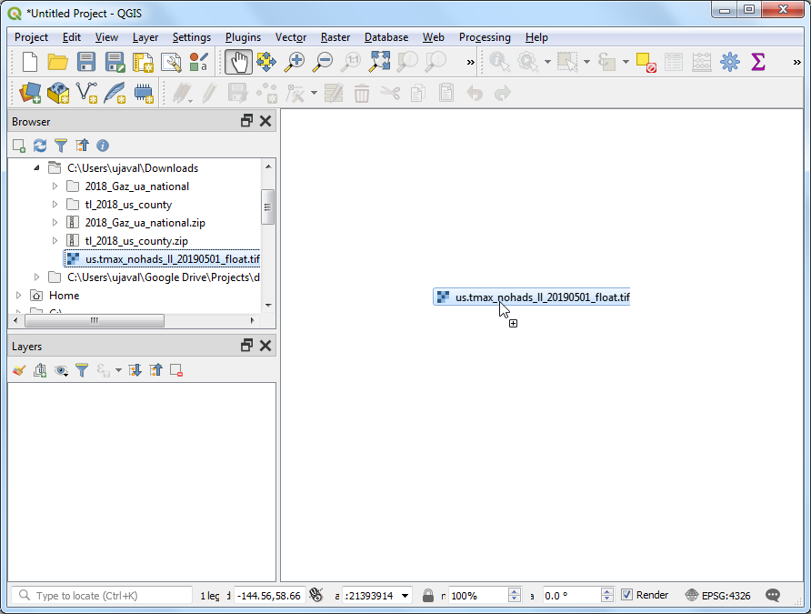
Videćete novi rasterski sloj
us.tmak_nohads_ll_20190501_floatučitan u Panelu Slojevi. Ovaj rasterski sloj sadrži maksimalnu temperaturu zabeleženu na svakom pikselu u stepenima Celzijusa. Zatim ćemo učitati datoteku tačaka urbanih područja. Ova datoteka dolazi kao tekstualna datoteka u formatu vrednosti razdvojenih tabulatorima (TSV). Kliknite na dugme Otvori menadžer izvora podataka na Traci sa alatkama za izvore podataka.
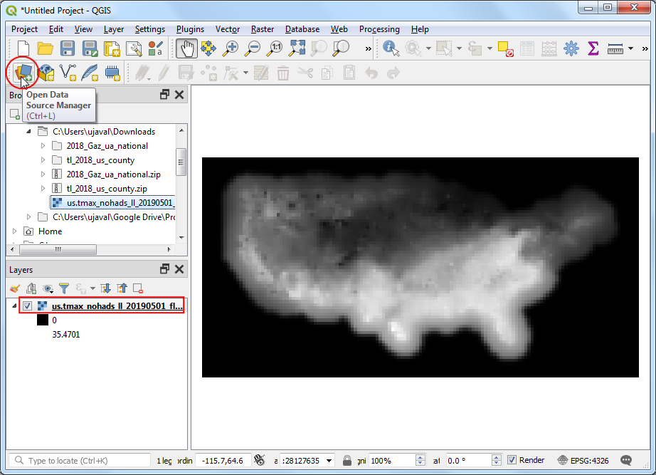
Pređite na karticu Razgraničeni tekst. Kliknite na dugme … pored Ime datoteke i navedite putanju do tekstualne datoteke koju ste preuzeli. U odeljku Format datoteke izaberite Prilagođeni razgraničnici i označite Tabulator. Izaberite
INTPTLONGkao X polje iINTPTLATkao Y polje. Kliknite na Dodaj, a zatim na Zatvori.
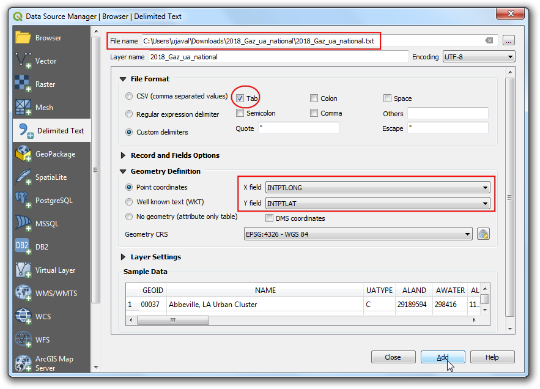
Novi sloj tačaka
2018_Gaz_ua_nationalće biti učitan u panelu Slojevi. Sada smo spremni da izvučemo vrednosti iz rasterskog sloja na ovim tačkama. Idite na .
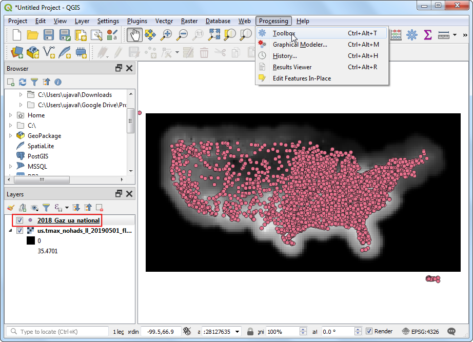
Pretražite i pronađite algoritam . Dvaput kliknite da biste ga pokrenuli.
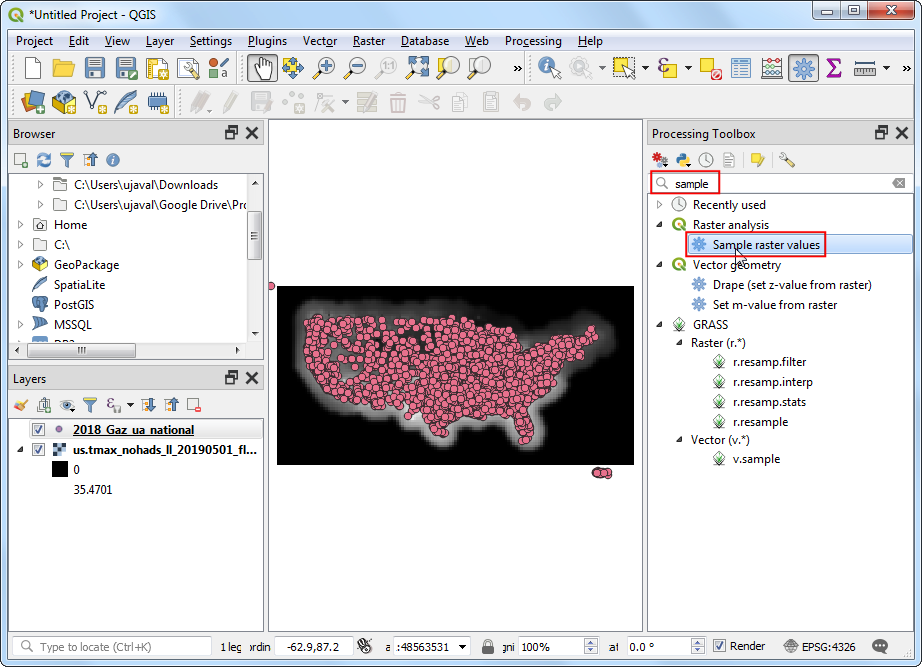
Izaberite
2018_Gaz_ua_nationalkao Sloj ulazne tačke. Izaberiteus.tmax_nohads_ll_20190501_floatkao Rasterski sloj za uzorkovanje. Proširite Napredni parametri i unesitetmaxkao Prefiks izlazne kolone. Kliknite na Pokreni. Kada se obrada završi, kliknite na Zatvori.
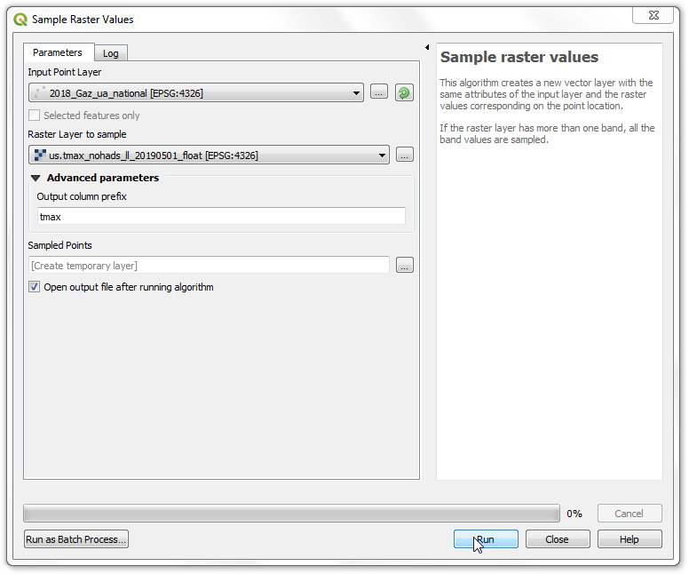
Novi sloj „Uzorkovane tačke“ biće učitan u panelu Slojevi. Izaberite alatku Identifikuj u traci sa alatkama Atributi i kliknite na bilo koju tačku. Videćete atribute prikazane u panelu Identifikuj rezultate. Videćete novi atribut pod nazivom tmax_1 dodat svakoj karakteristici. Ovo je vrednost piksela rasterskog sloja ekstrahovanog na lokaciji tačke. 1 predstavlja broj trake rastera. Ako bi rasterski sloj imao više traka, videli biste više novih kolona u izlaznom sloju.

Prvi deo naše analize je završen. Hajde da uklonimo nepotrebne slojeve. Držite pritisnut taster Shift i izaberite slojeve
Sampled Pointsi2018_Gaz_ua_national. Kliknite desnim tasterom miša i izaberite Remove da biste ih uklonili iz QGIS-a. Kada se od vas zatraži Remove 2 legend entries?, izaberite OK.
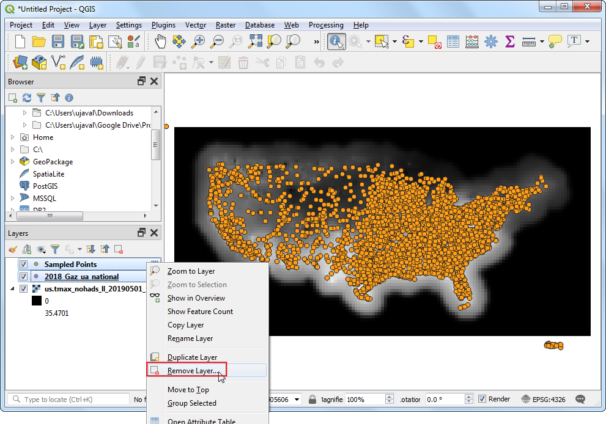
Sada ćemo koristiti sloj okruga da uzorkujemo raster i izračunamo prosečnu temperaturu za svaki okrug. Pronađite datoteku
tl_2018_us_county.shpu QGIS pregledaču i prevucite je na platno.
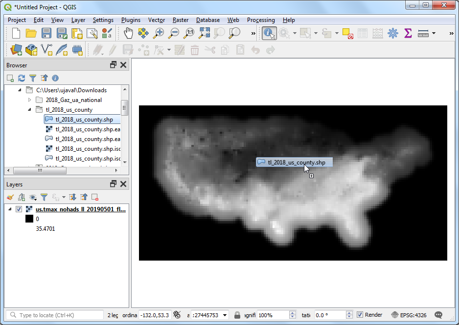
Novi sloj
tl_2018_us_countyće biti učitan u panel Slojevi. Idite na .
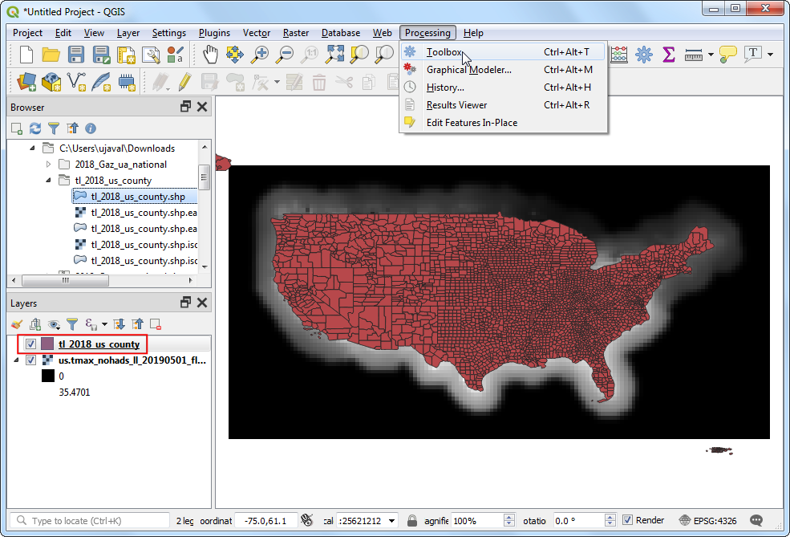
Pretražite i pronađite algoritam i dvaput kliknite da biste ga pokrenuli.
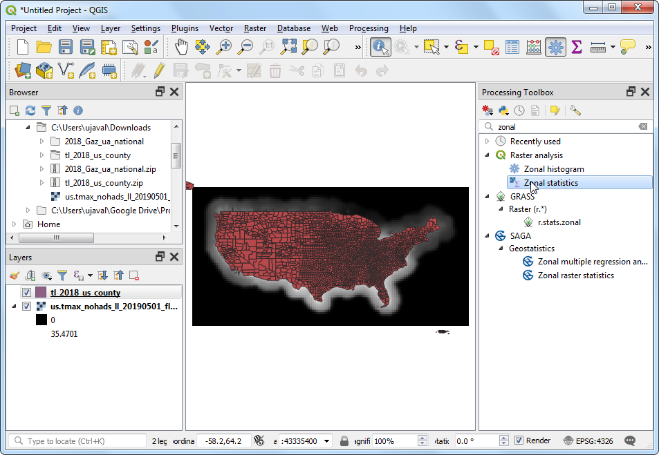
Izaberite
us.tmax_nohads_ll_20190501_floatkao Rasterski sloj itl_2018_us_countykao Vektorski sloj koji sadrži zone. Unesitetmax_kao Prefiks izlazne kolone. Kliknite na … pored Statistika za izračunavanje.

Izaberite samo vrednost „Srednja vrednost“ i kliknite na U redu.
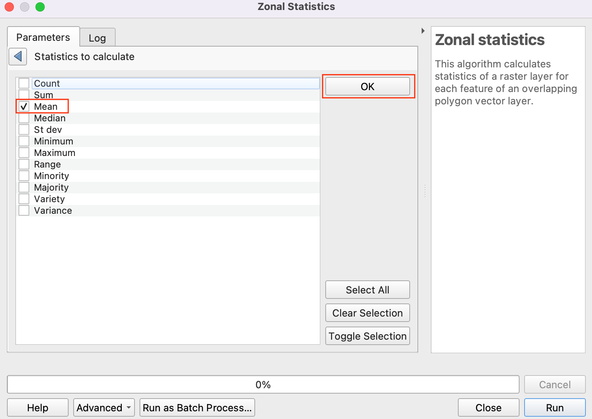
Sada kliknite na … pored Zonalna statistika i izaberite opciju Sačuvaj u datoteku da biste sačuvali izlaz.
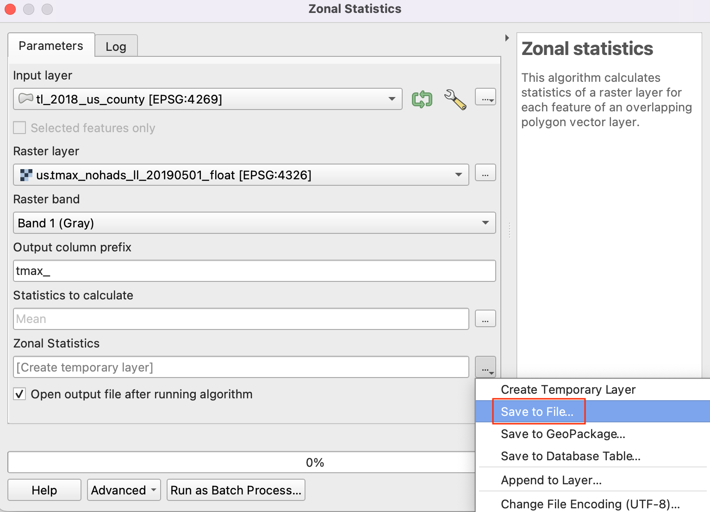Idite do fascikle u kojoj želite da sačuvate izlaz. Sačuvajte izlazni sloj kao
us_county_tmax.shp. Kliknite na Pokreni da biste započeli obradu. Algoritam može potrajati nekoliko minuta da se završi i videćete da je izlazni sloj dodat čim se obrada završi. Kliknite na Zatvori.
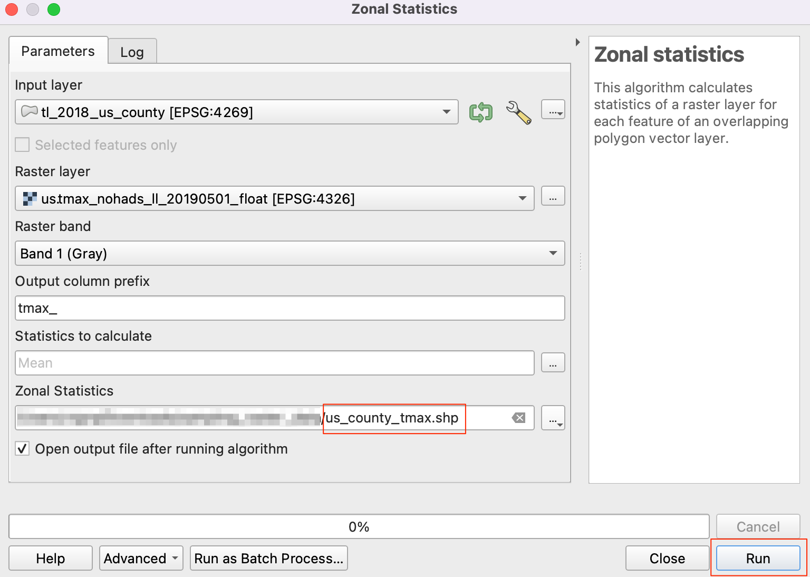
Kliknite desnim tasterom miša na sloj
us_county_tmaxi izaberite Otvori tabelu atributa.
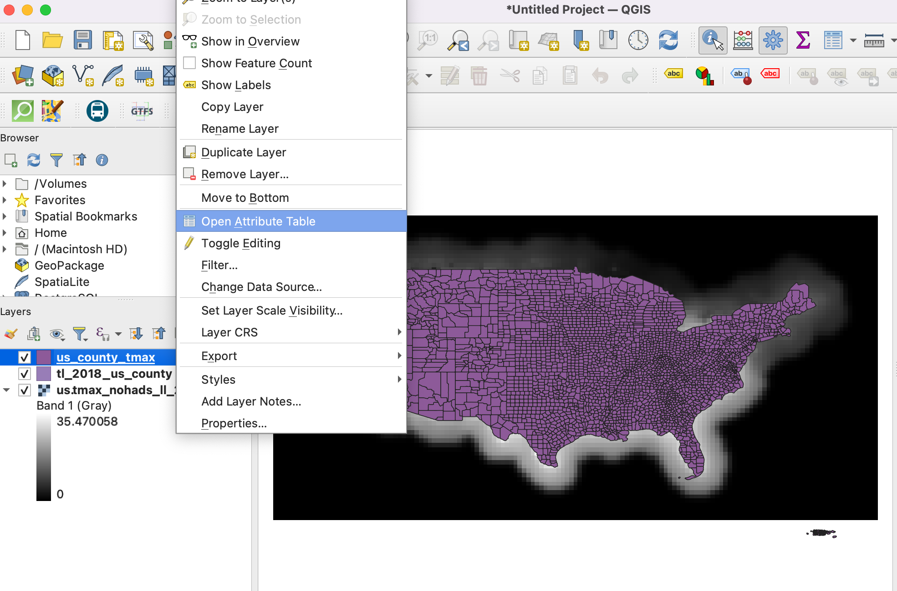
Videćete novu kolonu pod nazivom „tmax_mean“ dodatu u tabeli atributa. Ona sadrži prosečnu vrednost temperature izdvojenu preko poligona za svaku karakteristiku. Postoje neke nulte vrednosti jer su ti okruzi (koji pripadaju Aljasci, Havajima i Portoriku) van obuhvata rasterskog sloja.

If you want to give feedback or share your experience with this tutorial, please comment below. (requires GitHub account)